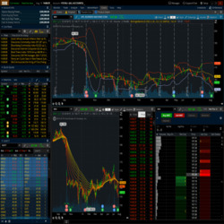
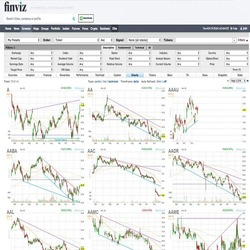
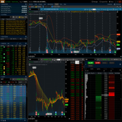
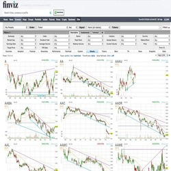

Jared Kelly
Autodidact
Day Trader📈
My Name is Jared Kelly. I'm 20 years old. I live in the southeast quadrant of Menifee, and I am not married. I am currently practicing the art of day trader. I wake up every day at 5 AM to study. I then spend most of my day at school taking classes and studying. When I get home I cook dinner if no one has cooked and do my homework. I typically end my day at 11 PM. I sleep quite well getting six hours of sleep each night. I do work quite well with others and make little trouble throughout my day. I spend most of my time watching TED Talks and listening to podcasts to better my understanding of the human condition.
I do not hold what most people would call a real job, nor do I plan too. At the moment day trading pays me nothing at all. Essential I am working for free. Day trading is a scaling job so any money I make goes directly back into my trading account to scale profits over time. When the time is right I will be able to raise money to earn more profit per trade. My learning in the stock market has taught me a lot about economics, both micro, and macro. They are not as important in the field of penny stocks, but they are fundamentals that are considered in every trade. Penny stocks also force me to be able to analyze chart patter and recognize patterns based upon the data I am given. This often leads to a lot of time reading to comprehend the data, which I have become quite effective. Finally, day trading has taught me a lot about discipline. Being able to separate the emotions of losing and earning money is a hard task. Having the patients and the restraint to follow your trade plan is crucial. Failing to stick to the plan is often brings worse outcomes.
I plan on never having a real job. I attend college just to broaden my horizon in terms of knowledge and experience. I say college is my backup plan, but in reality, it has never been. I see college as a trap to stay within the rat race. The rat race is what I will avoid. It is also the one thing I want to understand why people remain in the rat race.
Experience
Animal caregiver
• Tend to animals to ensure they had sufficient amounts of food, water, and shelter
• Handling animal waste
• Cared for dogs, snakes, rabbits,pigs, goats,and cows
Activities Assistant
• Engage the elderly residents in the Memory Care
• Assist the Activities Director with organizing and carrying out activities
•Communicate with residents and resident families effectively and with patience
Tutor
• Assisting students understanding english concepts
• Ensuring students stay on task
• CHelping students that needed extra attention
Education
UC Riverside
Portfolio
 

 